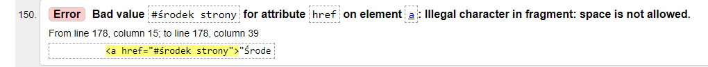
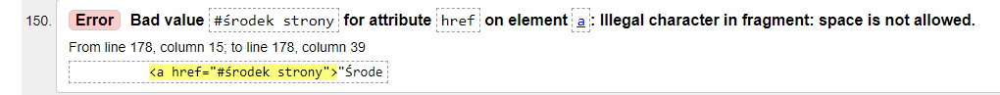

"Początek strony"
"Środek strony"
"Koniec strony" Tutaj jest poczta
Tutaj jest plik
Tutaj jest tabela
Tutaj jest formulasrz
Walidator HTML to specjalistyczny program lub aplikacja służąca do sprawdzania znaczników HTML na stronie internetowej pod kątem ewentualnych błędów składniowych i leksykalnych
80-432 Gdańsk Jana Pawla 2 53/95
ulubiony aktor:Oleg Vinik
ulubiony zespół muzyczny:Mozgi
pełna data urodzenia:10 wrzesnia 2000
H2SO4
x*x=x2
Rostislaw
Rostislaw
Rostislaw
Rostislaw
Rostislaw
Rostislaw
Strykharchuk
Strykharchuk
Strykharchuk
Strykharchuk
Strykharchuk
Strykharchuk
;) jest dobrze
('_') Serio?
:( smutek
:) radosc
(^_^) Super!
;( placz
Rostislaw Strykharczuk
"Początek strony"
"Środek strony"
"Koniec strony"
poniżej są trzy wyliczenia z różnymi znakami wyliczenia
Ty zaproponuj swoje, związane z informatyką
Producenty laptopów:
Poniżej są trzy numerowania z różnymi znakami numerowania
Ty zaproponuj swoje, związane z informatyką
Python obsługuje następujące typy danych
numeryczne (liczbowe): int, float, complex.
tekstowe: str.
sekwencji: list, tuple.
odwzorowania (mapping type): dict.
zestawów (set types): set, frozenset.
logiczne: bool.
binarne: bytes, bytearray.
Formuly w excel
AVERAGE
SUMA
LICZ. JEŻELI
ŚREDNIA
ZAOKR
Komenty w cmd
ATTRIB
COPY
DEL
DATE
Poniżej będą trzy poziomy numerowania/wyliczenia z różnymi rodzajami numerowania/wyliczenia
Ty zaproponuj swoje, związane z informatyką
Nazwy czcionek
Dobra
Arial
Comic Sans MS
Courier New
Średnia
Georgia
Impact
Times New Roman
Trebuchet MS
Verdana
Zły
Blinker
Żart o blondynce
Żart o blondynce
Dwie dziewczyny
Dwie dziewczyny
Stoją dwie dziewczynki przy oknie, jedna zła i jedna dobra i plują na przechodniów, dobra trafiła 5 razy,a zła 3… Dobro zawsze wygrywa!
Facet jedzie samochodem
Facet jedzie samochodem
Facet jedzie samochodem i słyszy w radiu komunikat:
"Początek strony" "Środek strony" "Koniec strony"  
